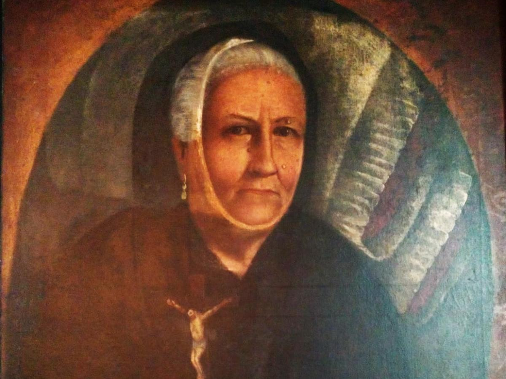

Explora la historia, cultura, y naturaleza de este encantador municipio antioqueño.
Historia
El Retiro, fundado en 1790, tiene una rica historia que incluye su papel en la independencia de Antioquia y su desarrollo como centro de comercio de madera y muebles. La historia de El Retiro está marcada por la ebanistería, una actividad que lo posicionó como referente en la industria de muebles de alta calidad. En el siglo XIX, el municipio se consolidó como punto estratégico para comerciantes y arrieros que cruzaban la región.
Con el paso del tiempo, el desarrollo agrícola y la ganadería se integraron en su economía. Actualmente, El Retiro conserva su encanto colonial, con casas de fachadas coloridas y calles empedradas, atrayendo a visitantes interesados en la historia y la cultura de Antioquia.
Comida
La gastronomía de El Retiro es una fusión de sabores tradicionales antioqueños. La bandeja paisa, el sancocho antioqueño, y el asado al carbón son platos infaltables. Aquí, los productos frescos de las montañas y las recetas locales reflejan la cultura retireña.
Entre sus delicias, destacan las arepas de chócolo, buñuelos, pandebonos, y empanadas, todos acompañados de café de fincas locales. La calidad del café en El Retiro es reconocida, y el municipio se ha convertido en un destino popular para los amantes del café, quienes disfrutan de diversas preparaciones en las cafeterías locales.
Gentilicio
Los habitantes de El Retiro se conocen como guarceños. Son personas trabajadoras, hospitalarias y dedicadas a preservar sus tradiciones culturales y naturales. Las fiestas y eventos locales reflejan su espíritu comunitario y su orgullo por las raíces antioqueñas. Además, los retireños destacan por su habilidad en la ebanistería y la agricultura, herencia de generaciones anteriores que sigue vigente.
Ríos y Quebradas
El Retiro cuenta con importantes recursos hídricos, entre ellos el río Pantanillo y la quebrada La Fe. Estos cuerpos de agua son esenciales para la biodiversidad de la región y también brindan espacios recreativos para locales y turistas.
La quebrada La Fe, que abastece de agua potable a la región, es popular para el senderismo y los picnics. Las autoridades locales han implementado proyectos para preservar estos recursos naturales y promover el ecoturismo en la zona, fomentando el respeto y cuidado del medio ambiente.
Puntos Turísticos
Embalse La Fe: Espacio natural perfecto para actividades acuáticas y observación de aves, rodeado de montañas.
Parque Principal: En el centro de El Retiro, rodeado de arquitectura colonial, es ideal para experimentar la vida local.
Casa Museo La Madera: Un museo que relata la historia de la ebanistería en El Retiro, con muestras de muebles tradicionales.
Sendero Ecológico La Ceja: Ruta de senderismo para disfrutar de vistas panorámicas y la rica biodiversidad de la región.
Personajes Importantes

El Retiro ha sido hogar de figuras destacadas que contribuyeron a su desarrollo. José María Ceballos es recordado por su labor en la promoción de la cultura y el comercio. Manuel Uribe Ángel, empresario en la industria maderera, ayudó a posicionar a El Retiro como un referente en la fabricación de muebles de alta calidad.
Estos personajes son parte de la historia viva de El Retiro, y sus legados continúan influyendo en la cultura y economía del municipio.